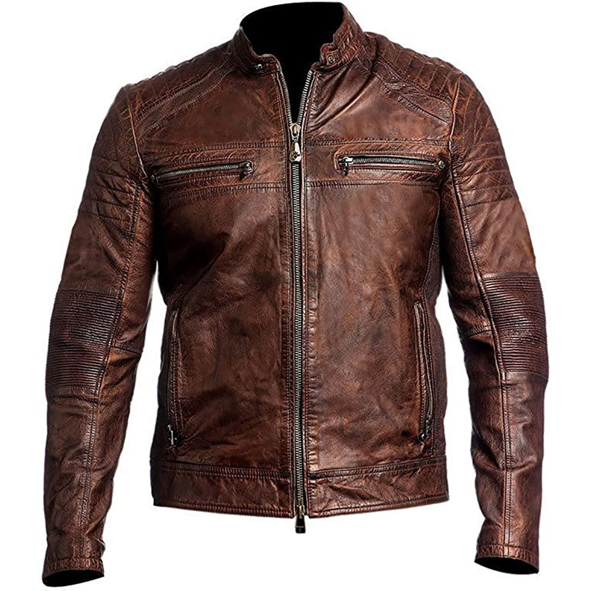

Basic Information
Leather is a durable and flexible material created through the tanning of animal hides, primarily from cows, goats, sheep, and pigs. The tanning process transforms the raw hide into a material that resists decay and is suitable for a wide range of applications, including clothing, accessories, and furnitur Full-Grain Leather: This is the highest quality leather available. It includes the entire grain layer of the hide and has a natural texture and grain. It’s known for its durability and develops a unique patina over time.Top-Grain Leather: Slightly lower in quality compared to full-grain leather, top-grain leather is sanded and refinished to remove imperfections. It still offers good durability and a smooth finish.
